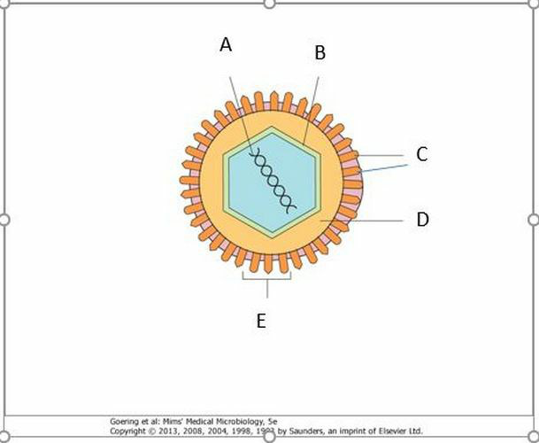
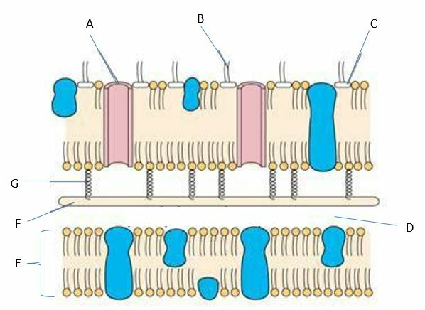
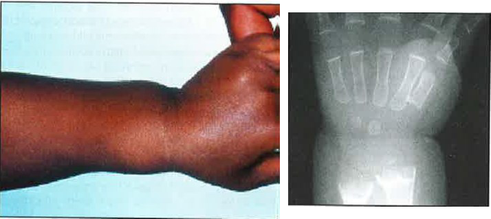

Vraag 1
De volgende twee vragen gaan over de casus van Rachid.
Rachid is een jongen van 15 jaar, die tot nu toe altijd gezond is geweest. Hij is normaal gegroeid, en lengte en gewicht liggen beide op de mediaanlijn. In het afgelopen jaar heeft hij driemaal een steenpuist gehad.
Rachid is een jongen van 15 jaar, die tot nu toe altijd gezond is geweest. Hij is normaal gegroeid, en lengte en gewicht liggen beide op de mediaanlijn. In het afgelopen jaar heeft hij driemaal een steenpuist gehad.
Welke bacterie is vermoedelijk verantwoordelijk voor de steenpuisten van Rachid?
Vraag 2
Vervolg casus Rachid
Welk aanvullend onderzoek is op dit moment het meest zinnig om de oorzaak van de recidiverende steenpuisten te achterhalen?
Vraag 3
We spreken van een ziekenhuisinfectie als een patiënt
Vraag 4
Een neonaat, geboren bij 35 weken ten gevolge van vroegtijdig gebroken vliezen, heeft koorts, tachypneu, tachycardie en een grauwe kleur. Men denkt aan sepsis en het kind krijgt een centrale lijn. Er wordt een bloedkweek afgenomen die na 12 uur positief wordt met Gramnegatieve staven. Wat is de meest waarschijnlijke verwekker?
Vraag 5
Bij het samenstellen van het jaarlijkse influenzavaccin wordt gekeken naar influenzavirussen uit het voorgaande jaar en wordt rekening gehouden met antigene drift. Welke twee antigenen van het influenzavirus worden hier bedoeld?
Meerdere antwoorden mogelijk.
Vraag 6
Dit is een schematische tekening van een influenzavirus. Wat wordt aangegeven met de letter A?

Vraag 7
Een puerperale infectie is een infectie opgelopen
Vraag 8
Dit is een schematische tekening van een bacterie. Om welke bacterie zou dit kunnen gaan?

Vraag 9
Het is winter en een 9 maanden oud meisje krijgt diarree, ruim een dag na haar verblijf bij de kinderopvang. Wat is de meest waarschijnlijke verwekker?
Vraag 10
In een groep Brabantse studenten is de bof (paramyxovirusinfectie) uitgebroken. Wat zijn de twee meest voorkomende complicaties van de bof?
Meerdere antwoorden mogelijk.
Vraag 11
Mazelen neemt in de westerse wereld weer toe en kan potentieel ernstig verlopen. Welke twee ernstige complicaties kunnen ook in een van tevoren gezond kind optreden tijdens of na een mazeleninfectie?
Meerdere antwoorden mogelijk.
Vraag 12
Steven van 4 jaar oud maakt waterpokken door. Hij had koorts die na 2 dagen daalde. Een paar dagen later stijgt de temperatuur weer naar 39°C en hij voelt zich ziek. Op de huid zijn blaasjes, pustels en korstjes te zien. Sommige plekjes zijn pussig. Wat is er nu waarschijnlijk aan de hand?
Vraag 13
Welke bacterie kan cellulitis, roodvonk en kraamvrouwenkoorts veroorzaken?
Vraag 14
Timo (9 jaar) heeft een beenlengteverschil. Hierdoor is zijn looppatroon afwijkend. Op het schoolplein wordt hij door een medeleerling voor ‘hinkepoot’ uitgescholden en als reactie hierop geeft hij de medeleerling een klap. Hij moet vervolgens na schooltijd bij de leerkracht komen en zijn moeder wordt er bij geroepen. Zijn moeder geeft aan dat ze goed begrijpt dat Timo verdrietig en boos wordt als hij wordt uitgescholden voor ‘hinkepoot’, maar ze geeft ook aan dat hij de ander dan niet zomaar mag slaan. Slaan van andere kinderen mag van moeder in geen enkele omstandigheid. Beter had Timo het tegen de leerkracht of zijn moeder kunnen zeggen, zodat zij de medeleerling hierop hadden kunnen aanspreken.
Welke opvoedingsstijl hanteert de moeder van Timo?
Welke opvoedingsstijl hanteert de moeder van Timo?
Vraag 15
In welke leeftijdsfase bereikt de instrumentele agressie zijn piek?
Vraag 16
Max is een 4-jarig jongetje dat net gestart is op de basisschool en met veel plezier erheen gaat. Hij gaat op zijn driewieler naar school. Max vindt alles leuk om te doen. Het lukt hem om maximaal 5 minuten met een taakje aan de slag te gaan. Max maakt goed contact met andere kinderen en spreekt in zinnen van 2 tot 3 woorden. Is dit passend bij de ontwikkeling van een jonge kleuter?
Vraag 17
Kinderen met een onveilige gehechtheid van het vermijdende type zijn kinderen
Vraag 18
De normale motorische ontwikkeling verloopt globaal van:
Vraag 19
Wanneer je signaleert dat een kind een bepaalde vaardigheid op de p90-leeftijd nog niet bereikt heeft zul je bepaalde overwegingen hebben. Welke is juist?
Vraag 20
Jopie is 12 maanden. Welke drie motorische vaardigheden zou hij volgens het van Wiechen Ontwikkelingsonderzoek moeten kunnen tonen?
Meerdere antwoorden mogelijk.
Vraag 21
Stelling: De jeugdgezondheidszorg behandelt geen zieke kinderen. Zij horen thuis bij de huisarts of kinderarts.
Vraag 22
Welke vaccinatie is belangrijker voor meisjes dan voor jongens? Vaccinatie tegen
Vraag 23
Tijdens de adolescentie rijpen niet alle hersengebieden even snel. In het algemeen is de parietaalkwab eerder uitgerijpt dan de frontaalkwab. Wat heeft dat voor gevolgen voor het gedrag van pubers?
Vraag 24
Kies de juiste alternatieven.
In de adolescentie treedt een vrij snelle rijping van het brein op. Welke gevolgen heeft dit voor de hoeveelheid grijze en witte stof? De hoeveelheid grijze stof . De hoeveelheid witte stof .
Vraag 25
Casus
Een 74-jarige vrouw komt met een vervelend gevoel aan de benen. Bij het lichamelijk onderzoek constateert de huisarts pitting oedeem van beide onderbenen. De temperatuur van beide benen is normaal. Wel is er beiderzijds een corona phlebetica en zijn er trofische stoornissen zichtbaar. De pulsaties zijn aanwezig. Er zijn geen souffles over de perifere arteriën hoorbaar. De capillary refill is 4 seconden.
Een 74-jarige vrouw komt met een vervelend gevoel aan de benen. Bij het lichamelijk onderzoek constateert de huisarts pitting oedeem van beide onderbenen. De temperatuur van beide benen is normaal. Wel is er beiderzijds een corona phlebetica en zijn er trofische stoornissen zichtbaar. De pulsaties zijn aanwezig. Er zijn geen souffles over de perifere arteriën hoorbaar. De capillary refill is 4 seconden.
Welke bevinding past het meest bij de diagnose perifeer arterieel vaatlijden?
Vraag 26
Vervolg casus
De huisarts besluit voor de volledigheid patiënte verder te onderzoeken. De bevindingen zijn als volgt: Vitale parameters: Ademhalingsfrequentie 14/min, pols irregulair inequaal 85/min, RR 150/90 mmHg. Hart: Ictus binnen medioclaviculairlijn, normale eerste en tweede harttoon, geen souffles of extra tonen hoorbaar, hartfrequentie 115/min irregulair.
De huisarts besluit voor de volledigheid patiënte verder te onderzoeken. De bevindingen zijn als volgt: Vitale parameters: Ademhalingsfrequentie 14/min, pols irregulair inequaal 85/min, RR 150/90 mmHg. Hart: Ictus binnen medioclaviculairlijn, normale eerste en tweede harttoon, geen souffles of extra tonen hoorbaar, hartfrequentie 115/min irregulair.
Welke diagnose past het beste bij deze bevindingen?
Vraag 27
Piet, 7 weken oud, wordt op de EHBO gepresenteerd met 39.6 graden koorts. Hij heeft geen diarree en geeft niet over. Bij lichamelijk onderzoek wordt een geprikkeld kind gezien. De urine wordt d.m.v. dipsticks onderzocht. Er wordt een sterk verhoogd aantal leukocyten aangetoond, de nitriettest is negatief. Een urinekweek wordt ingezet. De moeder vertelt dat er een nierafwijking bij de prenatale echografie is gezien, ze weet niet meer precies wat. Welke twee maatregelen kan de arts nu het beste nemen?
Meerdere antwoorden mogelijk.
Vraag 28
Welke drie beweringen over vesico-ureterale reflux zijn juist?
Meerdere antwoorden mogelijk.
Vraag 29
Welke diagnose past het beste bij deze scan en het bijbehorende pathologisch preparaat?

Vraag 30
Kies de juiste alternatieven.
Zakynthos is vijf dagen geleden geboren. Een dag later werd zijn moeder ziek en kreeg hoge koorts. Zakynthos had de eerste dagen geen problemen. Hij dronk goed en was levendig. Vandaag drinkt hij minder goed en is hij veel minder levendig. Zijn rectaal gemeten lichaamstemperatuur is 35,8 graad Celsius. Bij het verluieren huilt hij wat zeurderig. Welk(e) onderzoek(en) dient/dienen bij Zakynthos met spoed te worden gedaan? Bloedkweek: . CRP, aantal leukocyten en leukocytendifferentiatie: . Lumbaalpunctie voor grampreparaat en kweek: .
Vraag 31
Philomena (15 jaar) komt op de Spoedeisende Hulp. Ze heeft vijf uur geleden na een ruzie met een klasgenootje 19 tabletten paracetamol van 500 mg ingenomen. Welke drie laboratoriumwaarden in het bloed dient de SEH-arts met spoed aan te vragen?
Meerdere antwoorden mogelijk.
Vraag 32
De vijftienjarige oppas van de drieling Kobus, Claas en Nico (3 jaar) heeft zitten chatten en niet goed op de kinderen gelet. Als ze weer opkijkt blijkt Kobus het nog bijna volle flesje met een ijzerdrankje voor zijn zus te hebben leeggedronken en Claas een flesje met amoxicilline, terwijl Nicolaas de poep van de hond heeft opgegeten. Wie van de kinderen loopt nu het meeste gevaar om ernstige en/of blijvende gevolgen hiervan te ondervinden?
Vraag 33
Marasmus en Kwashiorkor zijn twee vormen van ondervoeding, die meestal goed kunnen worden onderscheiden. Welke twee van de ondergenoemde kenmerken passen beter bij Marasmus dan bij Kwashiorkor?
Meerdere antwoorden mogelijk.
Vraag 34
Voedingsdeficiënties kunnen leiden tot vitaminetekorten. Geef van elk vitaminetekort aan hoe je het met het juiste voedingsmiddel kan corrigeren (elk voedingsmiddel één keer gebruiken).
Sleep een optie naar de bijbehorende rij, of tik eerst op een kaart en dan op een rij.
Vitamine A
Sleep hier naartoe
Vitamine B1
Sleep hier naartoe
Vitamine D
Sleep hier naartoe
Foliumzuur
Sleep hier naartoe
Vraag 35
In een oorlogsgebied in Midden-Afrika wordt een jongetje gezien met afwijkende polsen. Er wordt een röntgenfoto (zie bijgevoegde illustratie) gemaakt. Welke voedingsdeficiëntie is hier het meest waarschijnlijk als oorzaak van de gevonden afwijkingen? Gebrek aan

Vraag 36
Het bestrijden van obesitas is belangrijk voor de volksgezondheid. Het blijkt echter zeer moeilijk dat succesvol te doen. Welke interventie tegen obesitas is bij gerandomiseerd onderzoek nog het meest effectief gebleken?
Vraag 37
Simone, 9 maanden oud, is alleen met haar moeder. Ze heeft zich verslikt in een stukje appel. Ze kijkt angstig, hoest en loopt blauw aan in het gelaat. Welke methoden zijn geschikt om te proberen het stukje appel er uit te krijgen?
Haar laten liggen op de ene arm van moeder, met het hoofd wat naar beneden, en met de andere hand een aantal klappen op de rug geven
Haar op de rug laten liggen met het hoofd ietsje lager en dan thoraxcompressies geven
Toepassen van de Heimlich-manoeuvre: terwijl het kind licht vooroverhangt compressie van de buik in craniodorsale richting
Vraag 38
Welke drie adviezen zijn effectief als het gaat om preventie van wiegendood?
Meerdere antwoorden mogelijk.
Vraag 39
Claire (2 jaar) lijdt aan sikkelcelziekte. Bij welke (bij de meeste kinderen vrij onschuldig verlopende) virusinfectie heeft zij een verhoogde kans op een ernstig beloop? Infectie met:
Vraag 40
Bij welke agens waartegen in het Rijksvaccinatieprogramma wordt gevaccineerd wordt vaak een sterk verhoogd aantal lymfocyten gevonden in het bloed?
Vraag 41
Casus behorende bij komende twee vragen
Een vijftienjarige jongen komt bij u op het spreekuur. Hij vertelt dat hij nog niet in de puberteit is. U verricht uitgebreid lichamelijk onderzoek waarbij u geen afwijkingen vindt. Het Tanner stadium bedraagt P1 G1. De lengte is net onder het streeflengtebereik.
Een vijftienjarige jongen komt bij u op het spreekuur. Hij vertelt dat hij nog niet in de puberteit is. U verricht uitgebreid lichamelijk onderzoek waarbij u geen afwijkingen vindt. Het Tanner stadium bedraagt P1 G1. De lengte is net onder het streeflengtebereik.
Waarvan is bij deze jongen waarschijnlijk sprake?
Vraag 42
Vervolgvraag casus vijftienjarige jongen
U besluit de rijping/biologische leeftijd te bepalen middels een handfoto/skeletleeftijd. Welke skeletleeftijd is het meest waarschijnlijk?
Vraag 43
Waarmee begint de vrouwelijke puberteit?
Vraag 44
De kinderarts zag afgelopen week op de polikliniek een jongen van acht jaar en een meisje van zeven jaar, afkomstig uit verschillende gezinnen. De reden van komst was bij beiden een vroeg beginnen van de puberteit. Bij beiden bleek bij lichamelijk onderzoek dat de puberteit inderdaad was begonnen. Bij wie van de twee is de waarschijnlijkheid van een ernstige onderliggende aandoening het grootst?
Vraag 45
De huisarts ziet een patiënte van 16 jaar. Ze is recent onbedoeld zwanger geworden en heeft een abortus laten doen. De huisarts wil haar motiveren om anticonceptie te gaan gebruiken. Hoe kan de huisarts het beste hierover in gesprek gaan met haar? Door…
Vraag 46
Ilse van 15 jaar heeft astma. Ze wordt hiervoor behandeld met een inhalatiesteroïd tweemaal per dag. Bij controle op de polikliniek blijken de longfunctiewaarden te zijn gedaald. Ze vertelt dat ze de puffer vaak vergeet te nemen. Eigenlijk gek, want haar make-up en tandenpoetsen vergeet ze nooit. Wat biedt het meeste perspectief om het astma beter onder controle te krijgen?
Vraag 47
Het trias van een toegebracht schedelhersenletsel (vh ‘shaken baby’) bestaat uit intracraniële bloedingen, retinabloedingen en encefalopathie. Wat zijn de meest voorkomende additionele letsels?
Vraag 48
Germaine is een vrouw van 35 jaar oud, die al jaren verslaafd is aan drugs en alcohol. Inmiddels is zij 26 weken zwanger. Het lukt haar niet om te stoppen met drinken en met het gebruik van drugs. Is hier volgens de Jeugdwet van 2015 sprake van kindermishandeling?
Vraag 49
Hoe kan scoliose het beste gediagnosticeerd worden bij klinisch onderzoek?
Vraag 50
Stelling: Met behulp van anamnese en lichamelijk onderzoek is het goed mogelijk om te differentiëren tussen een virale en een bacteriële tonsillitis
Vraag 51
Kies de juiste alternatieven.
Bij meisjes ligt het begin van de puberteit(sontwikkeling) tussen 9 en 13 jaar. Bij relatief vroege rijping komt er psychopathologie voor en zijn zij tevreden over hun uiterlijk.
Vraag 52
Rafaela is 16 jaar. Dit jaar doet ze voor de tweede keer eindexamen VMBO. Ze komt met haar moeder bij de huisarts. Moeder vindt dat zij niks aan huiswerk doet. Hierdoor is er voortdurend strijd. Rafaela ergert zich aan het gezeur van moeder. Hoewel Rafaela laat blijken niet in gesprek te willen, betrekt de huisarts haar er bij. Welke twee van de volgende aspecten van de communicatie zijn voor de huisarts in dit consult verder belangrijk:
Meerdere antwoorden mogelijk.
Vraag 53
Op welk begrip is de volgende definitie van toepassing? Definitie: Een persoonlijke of familiaire neiging om IgE-antilichamen te produceren als reactie op normale blootstelling aan mogelijke allergenen (vaak eiwitten).
Vraag 54
Roy (6 jaar) heeft een constitutioneel eczeem. Zijn huid is droog. Welke drie eigenschappen heeft de droge huid van Roy zeer waarschijnlijk?
Meerdere antwoorden mogelijk.
Vraag 55
Bij Fenna van 10 jaar komt de puberteit op gang. Haar puberteitsstadium volgens Tanner 1 is P2M2. Nu meldt moeder aan de huisarts dat ze ook wat bloederige afscheiding heeft uit de vagina. Hoe moet de huisarts deze afscheiding interpreteren?
Vraag 56
Op de leeftijd van 5 dagen zitten de testikels bij Rogier niet in het scrotum maar hoog in de lies. Het lukt niet om ze in het scrotum te brengen. Bij herhaling een maand later is de situatie ongewijzigd. De arts besluit dat operatief ingrijpen (orchidopexie) nodig is, tenzij de testikels alsnog spontaan in het scrotum komen. Stel dat de testikels niet alsnog spontaan indalen, wat is dan het beste tijdstip om de orchidopexie uit te voeren?
Vraag 57
Welke achterliggende oorzaak van recidiverende lagereluchtweginfecties is geassocieerd met een duidelijk verhoogde kans op de ontwikkeling van een maligniteit?
Vraag 58
Georgina heeft cystic fibrosis. Ze is pancreasinsufficiënt. Afhankelijk van de bloedwaarden is het raadzaam haar vitaminesuppletie te geven. Welke vier vitamines komen hiervoor in de eerste plaats in aanmerking?
Meerdere antwoorden mogelijk.
Vraag 59
Laurien is eind september geboren. Twee maanden later krijgt ze een loopneusje en moet ze hoesten en wordt ze kortademig. Ze heeft een temp van 38,0 graad Celsius. De huisarts ziet subcostale intrekkingen en een tachypneu. Bij auscultatie worden inspiratoire en expiratoire crepitaties gehoord en een piepende uitademing. Vier cm onder de ribbenboog is de leverrand te voelen. Deze voelt normaal aan. Wat is de meest waarschijnlijke diagnose?
Vraag 60
Frank (11 jaar) is bekend met astma met allergie voor huisstofmijt. Op zaterdagavond komt hij op de Spoedeisende Hulp met opnieuw een typische exacerbatie astma. Bij lichamelijk onderzoek wordt symmetrisch verminderd ademgeruis gehoord met een verlengd, piepend expirium over alle longvelden. Hij trekt intercostaal en subcostaal in en gebruikt zijn hulpademhalingsspieren. Een verneveling met salbutamol heeft slechts voor een deel effect, en de SEH-arts acht een opname geïndiceerd. Welk hulponderzoek c.q. aanvullend onderzoek is op dit moment geïndiceerd?
Vraag 61
Sleep de onderstaande ontwikkelingsstappen bij de daarbij passende mediane leeftijd (volgens Lissauer).
Sleep een optie naar de bijbehorende rij, of tik eerst op een kaart en dan op een rij.
zitten
Sleep hier naartoe
los lopen
Sleep hier naartoe
Vraag 62
Een maaltijd bevat: Eiwit 30 gram, Koolhydraten 65 gram, Onverzadigde vetten: 8 gram, Verzadigde vetten: 20 gram. Wat is de totale hoeveelheid energie die deze maaltijd bevat, in kilocalorieën? (1 kcal = 4,2 kJ) (Het antwoord moet exact goed zijn.)
Modelantwoord
632 kcal.<br><br>Berekening: eiwit 30 g × 4 kcal = 120 kcal; koolhydraten 65 g × 4 kcal = 260 kcal; vetten totaal 28 g × 9 kcal = 252 kcal. Totaal = 120 + 260 + 252 = 632 kcal.
Vraag 63
Charlotte is 7 jaar oud. Na een gecompliceerde geboorte heeft ze een spastische cerebrale parese. Thuis en op school gebruikt ze een rollator, maar als ze ergens anders heen gaat gebruikt ze een rolstoel. Ze fietst naar school op een driewielfiets. In welke GMFCS klasse valt Charlotte?
Vraag 64
Joachim 11 jaar oud. Hij werd geboren bij een zwangerschapsduur van 28 weken. Al vroeg werd duidelijk dat hij achterliep in zijn motorische ontwikkeling. Op de MRI hersenen bleek sprake te zijn van een periventriculaire leukomalacie. Bij het lichamelijk onderzoek valt op dat er vooral aan de benen een weerstand ontstaat bij snel passief bewegen. Welk type parese heeft Joachim naar alle waarschijnlijkheid?